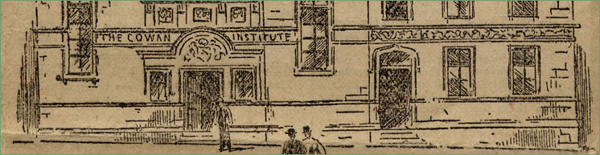
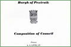
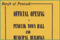

The Cowan Institute
 |
{kind=link}
  The Cowan InstituteThe Cowan Institute opened in 1894 and was the gift of the Cowan family in response to the wishes of Alexander Cowan, nearly 40 years previously, to erect a building ‘for recreation and instruction and the furtherance of all objects affecting the welfare of the Community’. |
{kind=link}
{kind=link}
| It consisted of a large hall with a capacity of 700 people, a library, reading rooms, gymnasium, museum and other rooms. In 1900 3 baths were installed and a year later the clock was added. It is a copy of the Canongate Tolbooth Clock. A board of Trustees was appointed to run the Institute. Over the years ‘the Institute’ became the centre of community life. It hosted the annual Valleyfield dance for the workers, concerts, weekly dancing (the beginning of many romances and marriages), the Flower Shows etc. There was a resident caretaker, the flat now the home of the Penicuik Historical Society Archive. The man remembered by many was Peter Black who organized annual outings to Galashiels for the patrons. He was also instrumental in beginning the Hunter and Lass in 1936. The Institute was requisitioned during both World Wars to house recruits after their initial training at Glencorse. In 1959 the Trustees offered the building to the Town Council together with a fund of £2,000 to be used for ‘providing reading materials and other comforts for the old people of the town’. The building was found to have dry rot and eventually closed. It was then decided to reconstruct completely the interior and use it as a Town Hall and Municipal Buildings. Local firm Tait the builders and joiners did the work. The Cowan Hall was constructed from the old Gallery. The name was preserved in relief above the main door but was removed in 1975 when the building was taken over under local government reorganization. The”new” Town Hall opened in 1963 and was the home of the Town Council until 1975, the present Marriage Room being their meeting Chamber. Until a few years ago the Registrar and District Court were housed here. The building was then closed for refurbishment. On re-opening it has become the location of the Department of Recreation and Leisure, the circle closing, with disabled access in the form of a lift allowing use by groups previously excluded. A new sound system gives young bands a venue for gigs. The Town Hall/ Cowan Institute is still very much at the centre of social life and is well used by all kinds community groups. It is the home of Penicuik Historical Society. |


Penicuik Historical Society :: Penicuik Town Hall :: 33 High Street :: Penicuik :: EH26 8HS
e-mail :: info@penicuikpapermaking.org
e-mail :: info@penicuikpapermaking.org
© Penicuik Historical Society :: site by Wallace Web Design